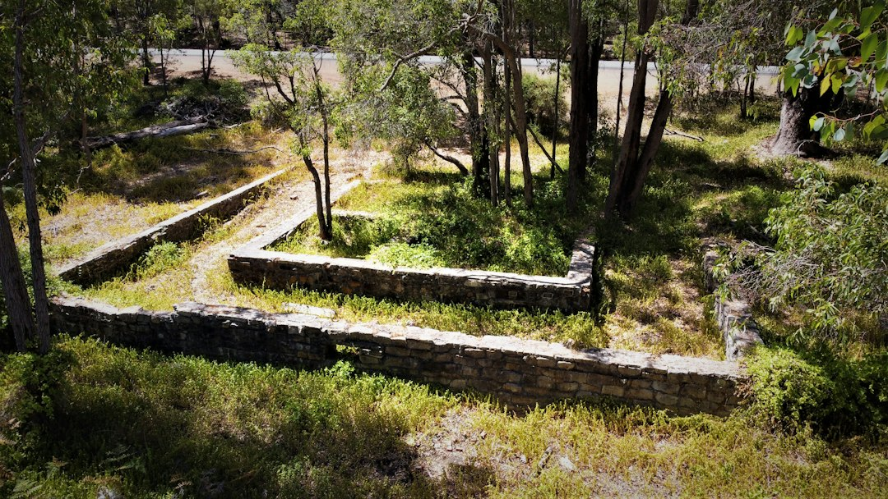

For a Perth retaining wall project, the core checks are wall height, boundary impact, drainage, material choice and whether engineering is needed. The source page says a building permit is generally needed once a wall retains more than 0.5 metres of ground, and engineered walls are typically designed to AS 4678. Its main practical comparison is between limestone block and post and panel systems, with other options suited to narrower site conditions.
For homeowners comparing retaining walls perth options, the useful starting point is not a brochure finish but the site, the retained height, drainage, access and approval path.
Retaining Walls Perth Explained
Retaining Wall Perth frames the decision around Perth conditions rather than a single default wall type. The published guide points first to limestone block and post and panel walls, then separates out timber sleeper, rock and boulder, besser block, drainage, engineered work and repair. That structure is useful because it keeps the early conversation practical: what is being retained, where the wall sits, what finish is wanted, and whether the wall is part of a larger building or boundary issue.
For a first enquiry, the best detail to gather is simple but specific. Note the suburb or postcode, the approximate retained height, whether the wall is on a boundary or driveway, any visible lean or cracking, and whether the project is new work, replacement or repair. Photos from both sides help a contractor understand access, soil exposure and drainage possibilities before talking about materials.
Material Choice Is A Site Decision
The source page says limestone block suits Perth's sandy Swan Coastal Plain blocks and local streetscape, while post and panel, also described as twin-side precast concrete, is common on driveways and boundaries where a fast, consistent finish is wanted. That does not make either system universal. A narrow side access, a visible street edge, a change in ground level, or a desire for a rendered finish can all shift the discussion.
Besser block is described for taller, engineered structural walls and rendered finishes. Timber sleeper is presented as a garden-scale option for terraces and low boundary retaining. Rock and boulder walls are linked to Perth hills blocks and granite-outcropped sites, where a battered, natural stone wall may suit the terrain. For another editorial view of a closely related phrase, see this retaining wall Perth guide.
Permits, Boundaries And Engineering
The clearest number in the supplied material is the 0.5 metre building permit threshold. The source says a building permit from the local government is generally needed once a wall retains more than 0.5 metres of ground. It also says a wall of any height can need a permit if it is tied to other building work, affects or protects adjoining land, or affects a boundary wall or dividing fence.
The same page names the Building Act 2011 (WA), Building Regulations 2012, Residential Design Codes and AS 4678. For a homeowner, the action is to avoid treating height alone as the whole test. Ask whether the combined height of tiered walls is relevant, whether the wall carries any surcharge, and whether a WA-registered building engineering practitioner needs to design it.
- Confirm the retained height, not just the visible wall face.
- Ask whether the wall affects a boundary, fence, driveway or adjoining land.
- Check whether the design needs engineering to AS 4678.
- Confirm the approval pathway with the local government before work starts.
Drainage And Repair Clues
The source page treats drainage as a structural detail, not an optional extra. It names ag-drain, gravel and geofabric drainage behind walls, and connects drainage to Perth's winter-saturated sandy ground. In quote conversations, ask how water behind the wall will be collected, filtered and discharged, because a neat face does not show whether the hidden system has been planned.
For existing walls, the supplied text mentions failing, bulging or cracked walls, plus assessment, repair and full replacement. A leaning timber sleeper section may call for a different scope from a bulging block wall that needs partial demolition and rebuilding. The first paid decision should usually be diagnostic: what failed, whether drainage or footing condition contributed, and whether repair would leave a compromised section beside new work.
Who This Applies To
This guide applies to Perth owners planning residential retaining, boundary works, driveway levels, garden terracing, replacement of a damaged wall, or early checks before a larger renovation. It is especially relevant where the wall height may approach the cited permit threshold, where a neighbouring property or dividing fence is involved, or where hills, river and coast terrain change the practical material choice.
It is less useful for choosing a wall purely by appearance. The supplied material repeatedly ties the choice to material behaviour, local ground conditions, engineering and approvals. A stronger brief gives a builder the retained height, photos, access notes, preferred finish and any known council or neighbour constraints before asking for a free quote.
- Measure The Retained Height. Record the approximate height of soil being retained and whether tiered walls combine into a larger retaining structure.
- Map The Boundary Context. Note whether the wall touches a boundary, driveway, fence, building work or adjoining land.
- Choose A Shortlist. Compare limestone, post and panel, besser block, timber sleeper and rock options against access, finish and engineering needs.
- Ask About Drainage. Request a clear explanation of ag-drain, gravel, geofabric and discharge planning behind the wall.
- Check Approval Before Work. Confirm permit and engineering requirements with the contractor and local government before committing to construction.
| Option | Where the source says it fits | Questions to ask |
|---|---|---|
| Limestone block | Sandy Swan Coastal Plain blocks and local streetscape | Is the finish natural or reconstituted, and how will drainage be handled? |
| Post and panel | Driveways and boundaries needing a consistent finish | Are the posts galvanised or concrete, and is access suitable for installation? |
| Besser block | Taller engineered walls and rendered finishes | Does the design need engineering, permits and core filling? |
| Timber sleeper | Gardens, terraces and low boundary retaining | Is the job garden-scale, and what is the replacement plan if sections fail? |
| Rock and boulder | Perth hills blocks and granite-outcropped sites | Can the wall be battered back, and does the site suit natural stone? |
Common questions
Do Perth retaining walls always need a building permit? No. The supplied page says a permit is generally needed once a wall retains more than 0.5 metres of ground, but walls of any height can need approval in boundary, adjoining land or related building work situations.
Which material is the default choice? The source page gives most attention to limestone block and post and panel walls. The better choice depends on the block, access, finish, retained height, drainage and whether engineering is required.
What should be included in a quote request? Include suburb or postcode, photos, approximate height, whether the wall is new or damaged, boundary context, preferred material and access notes. Those details help narrow the first discussion.
Can a cracked or leaning wall be repaired instead of replaced? Sometimes, but the supplied page says assessment of drainage, footing condition and material state is the starting point. A small timber sleeper repair is a different scope from a bulging block wall needing partial demolition.
This guide covers Perth retaining wall material choice, drainage questions, repair assessment, permits and engineering checks for residential projects.